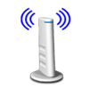

可用无线设备
如果您处在一个有很多无线网络的环境中你可能会在屏幕上看到很多不同的无线网络。选择合适的无线名称并点击“下一步”。如果您不能确定选择哪一个无线网络，请联系您的系统管理员。
如果您看不见您的无线网络，点击“刷新”按钮重新查找您所处环境中的无线网络。如果您仍然看不见任何无线网络，并且确认网络名称（SSID）没有被隐藏，请检查如下内容：
确认您的无线设备是开启的。
尝试将您的无线设备移至离接入点或计算机更近的位置。
如果您已经配置了接入点并隐藏了它的SSID名称，请点击“高级”按钮来手动输入网络名称。
请注意：无线信号强度是设备与正在通信的接入点之间的信号强度，不是您的计算机与接入点之间的无线信号强度。
